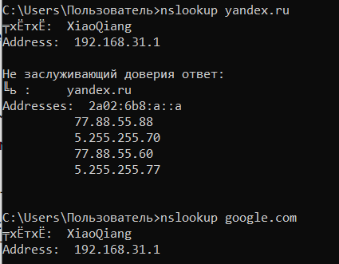
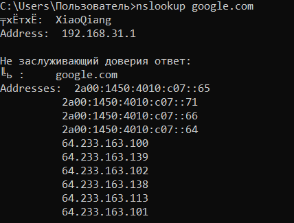
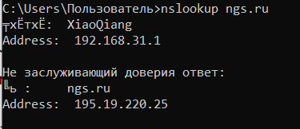

Команда nslookup — это инструмент командной строки, который позволяет получить информацию о доменном имени или IP-адресе. Он используется для выполнения поиска DNS и может быть использован для проверки связи, разрешения имени хоста и получения различных записей DNS.
Рисунок 1 – Команда nslookup в командной строке для yandex.ru
Рисунок 2 – Команда nslookup в командной строке для google.com
Рисунок 3 – Команда nslookup в командной строке для ngs.ru